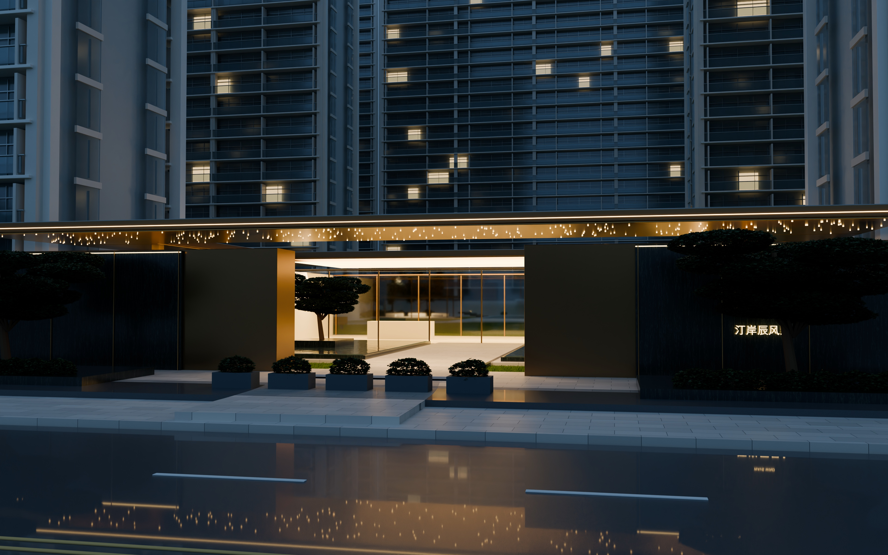
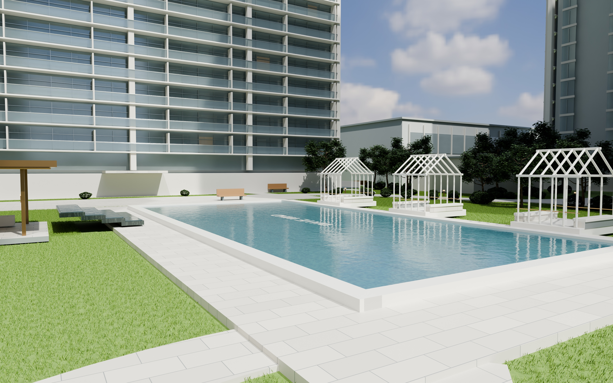
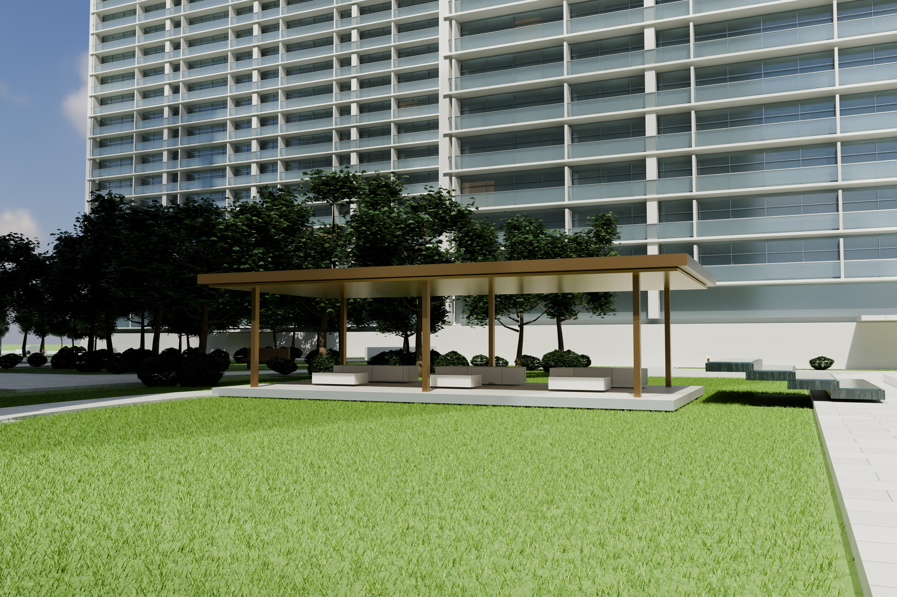
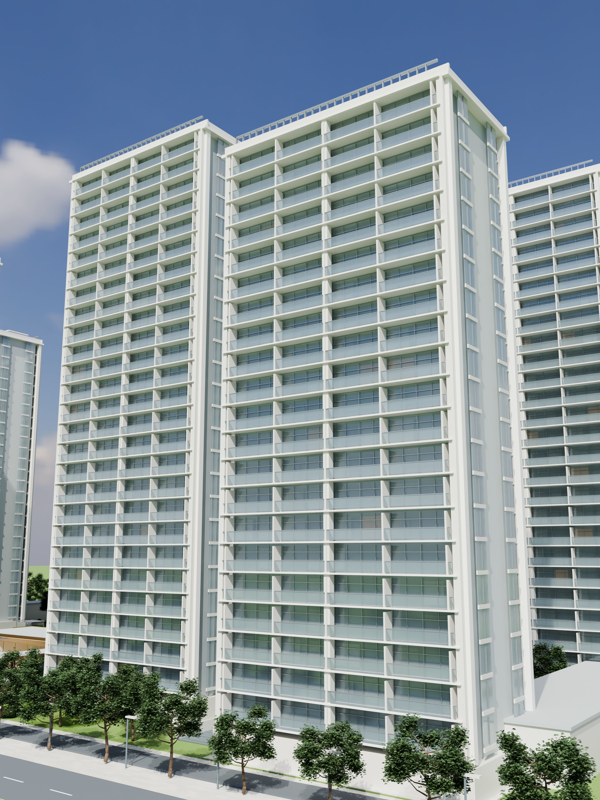
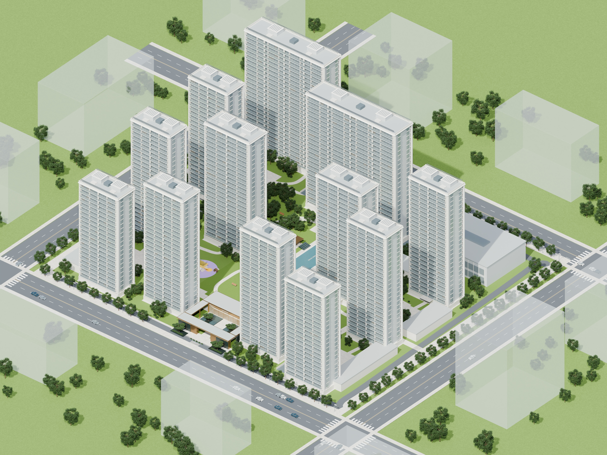

<!doctype html>
<html lang="zh-CN"><meta charset="utf-8"><meta name="viewport" content="width=device-width,initial-scale=1"><title>汀岸辰风里 · 渲染影集</title>
<style>
*{box-sizing:border-box}body{margin:0;background:#f3f1eb;color:#23322b;font-family:-apple-system,BlinkMacSystemFont,"PingFang SC",sans-serif}header,main,footer{max-width:1500px;margin:auto;padding:48px 5vw}header{padding-bottom:24px}small{font-size:11px;letter-spacing:3px;color:#788177}h1{font-size:clamp(26px,4vw,46px);font-weight:500;letter-spacing:3px;margin:14px 0}header p,footer{color:#72796f;font-size:13px;line-height:1.9}main{display:grid;grid-template-columns:1fr 1fr;gap:44px 28px;padding-top:16px}figure{margin:0}figure:first-child{grid-column:1/-1}img{display:block;width:100%;height:auto;background:#dfdfd7}figcaption{display:flex;justify-content:space-between;gap:12px;margin-top:14px;font-size:14px}figcaption span{color:#777;font-size:12px}a{color:inherit;text-decoration:none}a:hover{text-decoration:underline}footer{padding-top:0;font-size:12px;border-top:1px solid #d9ddd4;margin-top:24px;padding-top:24px}figure:last-child{max-width:680px}@media(max-width:700px){main{grid-template-columns:1fr;gap:30px}header{padding-top:34px}figcaption{font-size:13px}figcaption span{font-size:11px}}
.back-link{display:inline-block;margin-bottom:28px;padding:9px 15px;border:1px solid #bbc4b7;border-radius:20px;font-size:12px}.back-link:focus-visible{outline:2px solid #637b51;outline-offset:4px}
</style>
<header><nav aria-label="网站导航"><a class="back-link" href="../">← 返回 3D 漫游</a></nav><small>ARCHITECTURAL VISUALIZATION · 2026</small><h1>绿城 · 汀岸辰风里</h1><p>建筑景观效果图。点击图片查看原尺寸 JPG，点击尺寸下载高清图片。</p></header>
<main>
<figure><a href="images/02-south-gate.jpg" target="_blank" rel="noopener"></a><figcaption>02 / 南门暮色礼序 <span><a href="images/02-south-gate.jpg" download>3840 × 2400 · JPG ↓</a></span></figcaption></figure>
<figure><a href="images/03-pool-garden.jpg" target="_blank" rel="noopener"></a><figcaption>03 / 泳池花园光影 <span><a href="images/03-pool-garden.jpg" download>3840 × 2400 · JPG ↓</a></span></figcaption></figure>
<figure><a href="images/04-garden-pavilion.jpg" target="_blank" rel="noopener"></a><figcaption>04 / 林下会客亭 <span><a href="images/04-garden-pavilion.jpg" download>3840 × 2560 · JPG ↓</a></span></figcaption></figure>
<figure><a href="images/05-skyline.jpg" target="_blank" rel="noopener"></a><figcaption>05 / 建筑天际线 <span><a href="images/05-skyline.jpg" download>3000 × 4000 · JPG ↓</a></span></figcaption></figure>
<figure><a href="images/01-aerial.jpg" target="_blank" rel="noopener"></a><figcaption>01 / 晨光园区鸟瞰 <span><a href="images/01-aerial.jpg" download>3840 × 2880 · JPG ↓</a></span></figcaption></figure>
</main>
<footer>建筑景观效果图，依据参考资料重建，非竣工实景照片。北门立面及部分景观细节仍含推定。<br><a href="credits.md">素材来源与制作说明</a></footer>
</html>
